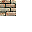
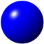
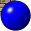
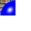

CNxSprite クラスはスプライトの表示に必要な座標等を保持しているクラスです。CNxSprite はデフォルトでは何も描画しませんので、CNxSprite クラス自体のオブジェクトを作成してもあまり意味はありませんが、子スプライトの座標を統轄する(自分自身は何も描画しない)親として使用する事ができます。
CNxSprite の派生クラスには、CNxSurfaceSprite、CNxComplexSprite 等があります。これらの派生クラスは、サーフェスの指定を行なうだけで、その内容を簡単に表示できます。
CNxSprite では自分の矩形を RECT 構造体で保持しています。左上は通常 (0, 0) です。しかし、スプライトの幅と高さは (right - left, bottom - top) で示される為、常に左上が (0, 0) である必要はありません。幅と高さが結果的に正の値であるならば、矩形の各座標を負にする事も許されます。
スプライトが描画される時には、CNxSprite::Draw() 仮想関数が呼び出されます。この関数の中でスプライトは必要な描画を行わなければなりません。引数として渡される矩形は、描画が必要なスプライト内の矩形を示します。例えば、32 x 32 サイズのスプライトにおいて、スプライトの矩形が (-30, -30) - (2, 2) の場合では、Blt 関数等の左上として (-30, -30) を指定すると、スプライトの左上隅へ転送されます。描画先は通常、サーフェスを示しますが、描画先の絶対座標(矩形)とは関係ありません。CNxSurfaceSprite 等の派生クラスは、この矩形を転送元サーフェスの矩形として扱っています。
スプライトは子を持つ事ができます。子の X, Y 座標は絶対座標ではなく、親スプライトから相対座標です。Z 値(座標)とは、スプライトが表示される順序を制御する値です。NxDraw では大きなZ 座標を持つスプライトが手前になります。通常、子は親よりも優先(手前に表示)されます。CNxSprite::DrawBehindChildren() 関数のオーバーライドによって、親を子よりも手前に表示する事も可能です。Z 値の詳細は、Z 値についてを参照して下さい。
子スプライトは親スプライトから様々な影響を受けます。親スプライトが移動されると子も自動的に移動し、親が不可視になると子も不可視になります。また、デフォルトでは子スプライトが描画できるのは親スプライトの矩形内だけですが、親スプライトの CNxSprite::SetClipChildren() 関数でクリップを無効にする事によって、外側にも描画する事ができる様になります。
スプライトは自分自身(必要なら子も)の表示に何らかの影響を与える操作(移動やサイズの変更)が行われると、次回の描画時に正しく表示される様に自分自身を無効化します。これは必要な時に自動的に行われます。しかし、スプライト自身とは直接関係の無い操作(例えば CNxSurfaceSprite クラスと関連付けられたサーフェスへの描画)は関知しません。スプライトの内容を強制的に反映させたい場合は CNxSprite::SetUpdate() 関数を手動で呼び出して下さい。この関数には更新矩形を指定する事もできますので、巨大なスプライトの一部のみを更新させる事が可能です。
CNxSprite クラスの一部の関数では、矩形の指定に RECT 構造体を用いますが、右下の1ドットは領域に含みません。つまり (32, 32) - (64, 64) という矩形が示す、幅と高さは 32 ドットです。
スプライトが delete 演算子によって削除されると、同時にそのスプライトが持っている子も全て削除されます。子スプライトを削除したくない場合は、CNxSprtie::SetParent() 関数で、別の親へのポインタ又は NULL を指定して下さい。
ページの最初 / クラスメンバ / NxDraw ライブラリ クラス階層図Z 値(座標)はスプライトの優先順位を決定する値です。CNxSprite::SetZPos() 関数によって変更できます。スプライトの描画順序は、親子関係(子は親より優先)、次に同じ親を持つ子スプライト同士の Z 値(大きい方が優先)の順に決定されます。結果として、最後に描画されるスプライトが最前面になります。Z 値の大小は、同じ親を持つ子スプライトの間だけで意味があり、他の親を持つスプライトとは無関係です。
以下の図で A は最上位のスプライト。() はそのスプライトに設定された Z 値です。
描画順は A,B,C,D,E,F,L,I,J,G,H,K となり、K の優先順位が最も高くなります。上の図で Z 値が描画順に関係しているのは、(B,F,K) と (G,I,L) です。それ以外のスプライトは Z 値を操作しても描画順には影響ありません。
以下は、上の図のスプライトを作成するコード例です。
CNxSprite* pSpriteA = new CNxSprite(NULL);
pSpriteA->SetZPos(3);
CNxSprite* pSpriteB = new CNxSprite(pSpriteA);
pSpriteB->SetZPos(0);
CNxSprite* pSpriteC = new CNxSprite(pSpriteB);
pSpriteC->SetZPos(0);
CNxSprite* pSpriteD = new CNxSprite(pSpriteC);
pSpriteD->SetZPos(0);
CNxSprite* pSpriteE = new CNxSprite(pSpriteD);
pSpriteE->SetZPos(0);
CNxSprite* pSpriteF = new CNxSprite(pSpriteA);
pSpriteF->SetZPos(1);
CNxSprite* pSpriteG = new CNxSprite(pSpriteF);
pSpriteG->SetZPos(4);
CNxSprite* pSpriteH = new CNxSprite(pSpriteG);
pSpriteH->SetZPos(5);
CNxSprite* pSpriteI = new CNxSprite(pSprtieF);
pSpriteI->SetZPos(1);
CNxSprite* pSpriteJ = new CNxSprite(pSpriteI);
pSpriteJ->SetZPos(0);
CNxSprite* pSpriteL = new CNxSprite(pSpriteF);
pSpriteL->SetZPos(-1);
CNxSprite* pSpriteK = new CNxSprite(pSpriteA);
pSpriteK->SetZPos(2);
最終的な描画順序は、親スプライトが保持している子スプライト配列の並びによって決定されます。正しい順序でスプライトが描画される為には、この配列が正しく(Z 値順に)ソートされていなければなりませんが、パフォーマンス上の理由により、CNxTrackingSprite 派生クラスの、CNxTrackingSprite::Refresh() 関数が呼び出された時を除き、自動的にソートは行われません。この時ソートの対象となるのは、CNxTrackingSprite 派生クラスを最上位の親とする全ての子スプライトです。CNxSprite::SetZPos() 関数内では「Z 値が変更された」というフラグを立てるだけで、ソート自体は行いません。
配列が正しくソートされていない場合、影響を受ける可能性がある関数は、CNxSprite::DrawSurface() および CNxSprite::EnumChildren() 関数です。Z 値の変更を行った後にこれらの関数が、常に正しい順序で子スプライトを処理する事を保証する為には、親スプライトの CNxSprite::SortChildren() 関数を明示的に呼び出す必要があります。ただし、前述の通り CNxTrackingSprite::Refresh() 関数(これを呼び出している CNxWindow::Refresh() も含みます)から CNxSprite::Draw() 関数が間接的に呼び出された時は、常に全ての子スプライトがソートされています。この為、CNxSprite::Draw() 関数の中からこれらの関数を呼び出す際に、明示的なソートは不要です。
ページの最初 / NxDraw ライブラリ クラス階層図コンストラクタの親スプライトへ NULL を指定する事で、親スプライトを持たない最上位スプライトを作成できます。例えば、CNxSprite から派生している CNxTrackingSprite クラス(と、その派生クラスである CNxWindow クラス)は最上位スプライトであり、親を持ちません。親が NULL のスプライトはいくつかの特別な機能を持ち、振る舞いも異なります。
| 相違点 | 最上位スプライト(親 == NULL) | 子スプライト(親 != NULL) | 参照項目 |
|---|---|---|---|
| 座標 | 変更は可能ですが、最上位スプライト自身は移動しません。子スプライトのみ影響を受けます。 | 自分自身と子スプライトが影響を受けます。 | CNxSprite::SetPos() |
| 表示先原点 | 変更は可能ですが、最上位スプライトの表示先座標は変わりません。子スプライトの表示先座標は影響を受けます | 自分自身と子スプライトが影響を受けます。 | CNxSprite::SetDisplayOrg() |
| 可視/不可視 | 最上位スプライト自身は不可視にならず、子スプライトのみが影響を受けます。子スプライトでは、不可視の場合 CNxSprite::Draw() 関数が呼び出されることはありませんが、最上位スプライトでは不可視でも呼び出されます。 | 自分自身と子スプライトが影響を受けます。 | CNxSprite::SetVisible() |
| 子クリップ | 常に有効。子クリップの設定に関らず、全ての子スプライトは最上位スプライトの外側へ描画する事はできません。 | 有効と無効を任意に切り替え可能。 | CNxSprite::SetClipChildren() |
最上位スプライトにおける、座標と表示先原点の意味は全く同じです。CNxSprite::SetPos() 関数および CNxSprite::SetDisplayOrg() 関数によって、最上位スプライトの座標と原点を変更する事は可能ですが、実際には子スプライトのみが影響を受けます。最上位スプライトの座標を変化させる事で、画面全体を揺らした様な効果を表現する事ができます。
最上位スプライト自身は、非表示でも描画を行う必要があります。通常の子スプライトは非表示の状態で CNxSprite::Draw() 関数が呼び出されることはありません。CNxSprite クラスにおける子スプライトの痕跡の消去は、無効となった(子スプライトの)痕跡へ、それより上位の親スプライトが描画する事で行われています。しかし、最上位スプライトが非表示になってしまうと、当然全ての子スプライトが非表示になり、描画を行うスプライトが無くなってしまいます。この為、最上位スプライトの場合は、自分自身の表示状態に関らず CNxSprite::Draw() 関数が呼び出される様になっています。
ページの最初 / NxDraw ライブラリ クラス階層図構築、消滅
| CNxSprite() | コンストラクタ |
矩形
| GetWidth() | 幅を取得 |
| GetHeight() | 高さを取得 |
| GetRect() | 矩形を取得 |
| SetSize() | サイズを変更 |
| SetRect() | 矩形を設定 |
親子関係
| SetParent() | スプライトの親を設定 |
| GetParent() | スプライトの親を取得 |
| SetClipChildren() | 子スプライトのクリップ機能を設定 |
| GetClipChildren() | 子スプライトのクリップ機能を取得 |
| EnumChildren() | 子スプライトを列挙 |
| SortChildren() | 子スプライトをソート |
属性
| SetVisible() | スプライトの可視/不可視を設定 |
| IsVisible() | スプライトの表示状態を取得 |
座標
| SetPos() | 座標を設定 |
| GetPos() | 座標を取得 |
| GetXPos() | X 座標を取得 |
| GetYPos() | Y 座標を取得 |
| SetZPos() | Z 座標を設定 |
| GetZPos() | Z 座標を取得 |
| OffsetPos() | 現在の座標から相対移動 |
| SetDisplayOrg() | 表示先座標の原点を設定 |
| GetDisplayOrg() | 表示先座標の原点を取得 |
| MoveCenter() | 指定されたスプライトの中心へ移動 |
| SpriteToTop() | スプライト座標を、最上の親座標へ変換 |
| TopToSprite() | 最上位の親座標を、このスプライト座標へ変換 |
描画、更新
| SetUpdate() | 更新フラグをセット |
| DrawSurface() | スプライトをサーフェスへ描画 |
| Refresh() | 全てのスプライトの更新に必要な矩形を列挙 |
オーバーライド可能な関数(protected)
| PreUpdate() | 更新状態が調べられる直前に呼び出される仮想関数 |
| Update() | 更新時に一度だけ呼び出される仮想関数 |
| Draw() | 描画内容を記述する仮想関数 |
| DrawBehindChildren() | 子スプライト表示後に呼び出される仮想関数 |
CNxSprite クラスのコンストラクタです。
| CNxSprite* pParent | 親スプライトへのポインタ |
CNxSprite クラスのコンストラクタです。pParent には親とする CNxSprite クラスへのポインタを指定します。NULL を指定すると、構築されるスプライトは最上位スプライトになります。
コンストラクタによってスプライトの状態は以下の様になります。
スプライトの幅を返します。
なし
スプライトの幅を返します。
返される幅は、CNxSprite::GetRect() 関数で得られる矩形の right から left を引いた値です。
ページの最初 / クラスメンバ / NxDraw ライブラリ クラス階層図スプライトの高さを返します。
なし
スプライトの高さを返します。
返される高さは、CNxSprite::GetRect() 関数で得られる矩形の bottom から top を引いた値です。
スプライトの矩形を取得します。
| LPRECT lpRect | スプライト矩形を受けとる RECT 構造体へのポインタ。 |
なし
スプライト自身のサイズを示す矩形を取得します。スプライトのサイズは RECT 構造体の right - left, bottom - top で示されるため、左上は (0, 0) である必要はありません。CNxSprite の派生クラスである、CNxSurfaceSprite クラスではこの矩形をサーフェスの転送元矩形として扱っています。
スプライトのサイズを変更します。
| int nWidth | スプライトの幅 |
| int nHeight | スプライトの高さ |
成功なら TRUE
現在のスプライト矩形の left へ nWidth を、top へ nHeight 引数を加えた結果を矩形の右下として設定します。変更後のスプライト矩形は (left, top) - (left + nWidth, top + nHeight) となります。
スプライトの矩形を設定します。
| const RECT* lpRect | 設定する矩形を示す RECT 構造体へのポインタ。 |
なし
スプライト自身のサイズを示す矩形を設定します。スプライトのサイズは RECT 構造体の right - left, bottom - top で示されるため、左上は (0, 0) である必要はありません。CNxSprite の派生クラスである、CNxSurfaceSprite ではこの矩形をサーフェスの転送元矩形として扱っています。
スプライトの親を変更します。
| CNxSprite* pParent | 親スプライトへのポインタ |
直前の親スプライトへのポインタ。NULL ならばエラー。
現在の親から切り離した後、指定された親へ変更します。自分自身を親に設定する事はできません。
スプライトの親を取得します。
なし
現在の親スプライトへのポインタ
子スプライトのクリップ機能を有効、又は無効にします。
| BOOL bClip | 子スプライトをクリップするならば TRUE |
設定前の状態を返します。
デフォルトでは、子スプライトは親スプライトの矩形の外側へ描画できません。bClip へ FALSE を渡すと、この機能が解除され、子スプライトは親の外側へ描画できる様になります。
以下の例は、親より子スプライトの方が大きい場合において、クリップ有効と無効の違いを示しています。親と子の表示先座標は同じです。
|  |  |  |  |
| 親スプライト | 子スプライト | クリップ無効 | クリップ有効 |
子クリップ機能の状態を返します。
なし
子クリップ機能が有効であれば TRUE を返します。
子スリップ機能とは、子スプライトを描画する際に親スプライトの矩形から外側へ描画できないよう様にする機能です。
子スプライトを列挙します。
| EnumChildrenProc | pfnEnumProc | 呼び出されるメンバ関数へのポインタ |
| LPVOID | lpContext | メンバ関数へ渡されるパラメータ |
列挙が最後まで行われたならば TRUE, pfnEnumProc によって列挙が中止されたならば FALSE を返します
この関数は直属の子のみを列挙します。全ての子を列挙するには、pfnEnumProc の内部から更に EnumChildren() 関数を呼び出して下さい。
この関数は現在の子スプライト配列の内容に従って、子スプライトを列挙します。正しい Z 順で列挙する為には、この関数の前に CNxSprite::SortChildren() 関数の呼び出しが必要になる場合があります。詳細については、Z 値(座標)について を参照して下さい。
pfnEnumProc へ指定する関数のプロトタイプは以下の通りです。
BOOL CNxSprite::EnumChildrenProc(CNxSprite* pSprite, LPVOID lpContext);また、EnumChildrenProc は CNxSprite の入れ子型として、以下の様に宣言されています。
typedef BOOL (CNxSprite::*EnumChildrenProc)(CNxSprite* pSprite, LPVOID lpContext);pSprite 引数へは、列挙された子スプライトへのポインタ、lpContext へは EnumChildren() 関数呼び出し時の lpContext の値が渡されます。関数から FALSE を返すと列挙が中止され、EnumChildren() 関数からは FALSE が返されます。
以下の例では、子スプライトの座標を (10, 10) に設定します。EnumChildrenProc へのキャストを行っている点に注意して下さい。
BOOL CNxAAASprite::SetChildrenPos(CNxSprite* pSprite, LPVOID lpContext)
{
LPPOINT lpPoint = static_cast<LPPOINT>(lpContext);
pSprite->SetPos(lpPoint->x, lpPoint->y);
return TRUE;
}
POINT point;
point.x = 10;
point.y = 10;
EnumChildren(static_cast<EnumChildrenProc>(SetChildrenPos), &point);
ページの最初 / クラスメンバ / NxDraw ライブラリ クラス階層図
子スプライトをソートします。
| BOOL | bDirectOnly | 直系の子のみのソートならば TRUE、全ての子のソートならば FALSE |
なし
Z 値に従って子スプライトをソートします。bDirectOnly 引数が TRUE ならば直系の子のみのソート、FALSE ならば全ての子がソートされます。例えば、最上位スプライトから bDirectOnly = FALSE で関数を呼び出すと、全ての子スプライトがソートされます。しかし、Z 値を変更したスプライトが分かっている場合、必要な親スプライトに対して bDirectOnly = TRUE で関数を呼び出す方が効率的です。
NxDraw ではパフォーマンス上の理由により、CNxSprite::SetZPos() 関数で Z 値の変更を行っても、描画直前までソートを行いません(ここでの"描画" とは、CNxTrackingSprite 派生クラスを最上位の親として、Refresh() メンバ関数を呼び出す事を示します)。スプライトが正しい順序で描画される為には、親スプライトが保持している子スプライト配列が、Z 順に従って正しくソートされていなければなりません。Z 順が問題になる関数(CNxSprite::DrawSurface() および CNxSprite::EnumChildren())の前に、この関数の呼び出しが必要な場合があります。
概要の Z 値(座標)について も参照して下さい。
スプライトの可視/不可視を設定します。
| BOOL bVisible | 可視にするならば TRUE |
設定前の状態が返されます。
スプライトの表示状態を、可視又は不可視に設定します。子を持っている場合は子もその影響を受けます。
スプライトの現在の表示状態を返します。
なし
可視状態であれば TRUE を返します。
スプライトが現在可視状態であれば TRUE を返します。なお、親を持つ子スプライトは必ずしも実際の表示状態と一致しない場合があります。自分自身が可視状態であれば、親スプライトによって実際の表示状態が不可視になっていても、この関数は TRUE を返します。
スプライトの座標を設定します。
| int x | X 座標 |
| int y | Y 座標 |
成功なら TRUE
スプライトの X 座標および Y 座標を設定します。
スプライトの座標を返します。
| LPPOINT lpPoint | スプライトの座標を受けとる POINT 構造体へのポインタ。 |
なし
スプライトの座標を返します。親を持っている場合は、親スプライトに対する相対座標です。
スプライトのX 座標を返します。
なし
返される値は親スプライトからの相対座標です。
スプライトの Y 座標を返します。
なし
返される値は親スプライトからの相対座標です。
スプライトの Z 座標を設定します。
| int z | スプライトの Z 座標を INT_MIN から INT_MAX の範囲で指定します |
設定前の Z 座標を返します。
Z 座標は INT_MIN から INT_MAX の範囲で、値が大きな Z 座標を持つスプライトが手前に表示されます。値の重複も許されますが、その際の表示順は不定になります。初期値は 0 です。表示順を制御する場合は必ず設定して下さい。重なり合わないスプライト同士では特に設定する必要はありません。
親を持たない最上位スプライトでは Z 座標の意味はありません。
スプライトの Z 座標を返します。
なし
スプライトの Z 座標を返します
Z 座標は INT_MIN から INT_MAX の範囲で、値が大きな Z 座標を持つスプライトが手前に表示されます。値の重複も許されますが、その際の表示順は不定になります。初期値は 0 です。表示順を制御する場合は必ず設定して下さい。重なり合わないスプライト同士では特に設定する必要はありません。
親を持たない最上位スプライトでは Z 座標の意味はありません。
現在の座標へオフセットを加算してスプライトを移動します。
| int nXOffset | X 方向へ移動する量 |
| int nYOffset | Y 方向へ移動する量 |
なし
現在の X 座標および Y 座標へ引数を加算してスプライトを移動させます。
スプライトの表示先原点の座標を設定します。
| int x | 原点の X 座標 |
| int y | 原点の Y 座標 |
成功なら TRUE
スプライトが実際に表示される座標は、現在の座標と原点を加えた座標です。子スプライトを持つ親へ原点を設定すると、クリップ矩形(CNxSprite::SetClipChildren() 関数を参照)と子スプライトも影響を受けます。CNxSprite::GetPos() 関数等で得られる、スプライト自身の座標に影響はありません。
スプライトの表示先原点の座標を返します。
| LPPOINT lpPoint | 原点座標を受けとる POINT 構造体へのポインタ |
なし
スプライトが実際に表示される座標は、現在の座標と原点を加えた座標です。子スプライトを持つ親へ原点を設定すると、クリップ矩形(CNxSprite::SetClipChildren() 関数を参照)と子スプライトも影響を受けます。
座標を指定されたスプライトの中心へ移動します。
| const CNxSprite* pParent | 基準とするスプライトへのポインタ(NULL ならば現在の親スプライト) |
成功なら TRUE。pParent が自分自身と同じか、自分自身が最上位スプライトであると、関数は失敗します。
基準スプライトと、自分自身の座標を絶対座標へ変換した後に、基準スプライトの中心へ移動させます。pParent 引数へ親スプライト以外を指定した場合は注意が必要です。親スプライトの子クリップが有効になっていると、親矩形の外側へ配置され、見えなくなってしまう場合があります。
スプライト座標を、最上位スプライトの座標へ変換します。
| LPPOINT lpPoint | 変換される座標を示す POINT 構造体へのポインタ |
なし
スプライト座標を最上位スプライトの座標へ変換します。最上位スプライトとは、自分の親を持たないスプライトの事です。親を持たないスプライトでは、関数は何も行ないません。例えば CNxWindow オブジェクトがこのスプライトの最上位の親である場合に、スプライトの現在の座標を変換すると、結果はウィンドウのクライアント座標になります。
逆の変換を行なう関数として、CNxSprite::TopToSprite() 関数があります。
最上位スプライトの座標を、スプライト座標へ変換します。
| LPPOINT lpPoint | 変換される座標を示す POINT 構造体へのポインタ。 |
なし
スプライト座標を最上位スプライトの座標へ変換します。最上位スプライトとは、自分の親を持たないスプライトの事です。親を持たないスプライトでは、関数は何も行ないません。例えば CNxWindow オブジェクトがこのスプライトの最上位の親である場合に、ウィンドウのクライアント座標を変換すると、結果はスプライトの座標になります。
逆の変換を行なう関数として、CNxSprite::SpriteToTop() 関数があります。
スプライトの指定範囲をサーフェスへ描画します。
| CNxSurface* pSurface | 描画先サーフェスへのポインタ |
| int dx | サーフェス上の描画開始 X 座標 |
| int dy | サーフェス上の描画開始 Y 座標 |
| const RECT* lpRect | サーフェスへ描画される矩形 |
成功ならば TRUE
自分自身と子を含めたスプライトを指定されたサーフェスへ描画します。この関数を呼び出されたスプライトが実質的な親となります。以後の解説で、「スプライト」という表記は、この関数を呼び出されたスプライト自身の事を意味します。
この関数は、現在の子スプライト配列の内容に従って、子スプライトを描画します。正しい Z 順で描画する為には、この関数の前に CNxSprite::SortChildren() 関数の呼び出しが必要になる場合があります。詳細については、Z 値(座標)について を参照して下さい。
この関数は、スプライトの現在の状態をサーフェスへ書き出します。CNxSprite::Update() 関数および、CNxSprite::PreUpdate() 関数は呼び出されません。
関数は描画前にサーフェスの塗り潰しを行ないません。必要であれば関数を呼び出す前にサーフェスを塗り潰して下さい。
x および y 引数へは、描画先サーフェスの左上の座標を指定します。
lpRect 引数へは、描画されるスプライトの矩形を指定します。この矩形の左上へ (0, 0) を指定すると、スプライトはサーフェスの(dx, dy) から描画されます。しかし、矩形の左上へ (-10, -10) を設定して渡すと、描画先の (0, 0) - (9, 9) までは何も描画されず、(10, 10) からスプライトが描画されます。lpRect 引数へ NULL を指定すると、左上は (0, 0)、右下はスプライトのサイズが用いられ、スプライト全体がサーフェスへ描画されます(サーフェスの大きさが十分にある場合)。なお、スプライト自身の座標は無視されます(サーフェスへ描画される範囲には反映されません)。
最終的に描画される範囲は、描画先サーフェスに設定されているクリッピング矩形の影響を受けます。クリッピング矩形については、CNxSurface::SetClipRect() 関数等を参照して下さい。
子クリップが無効になっている場合、スプライトの外側に(このスプライトの)子スプライトが描画される事があります。しかし、lpRect 引数へ NULL していると、描画矩形はこのスプライトに限定されてしまうため、これらの子(の収まらない部分)は描画されません。この様な場合は、親スプライトの矩形を拡張したものを lpRect 引数へ渡して下さい。例えば、スプライトのサイズが (60, 40) の時、周囲 40 ピクセル分を描画するならば、(-40, -40) - (100, 80) を矩形として渡します。Win32API の InflateRect() 関数で、::InflateRect(&rect, 40, 40) などとすると良いでしょう。
下の例は、CNxScreen クラスのオブジェクトであるm_pScreen の全体をサーフェスへ書き出し、更にディスクファイルとして保存します。エラー処理は省略しています。
CNxSurface* pTempSurface = new CNxSurface; pTempSurface->Create(m_pScreen->GetWidth(), m_pScreen->GetHeight()); m_pScreen->DrawSurface(pTempSurface, 0, 0); pTempSurface->SaveImage(_T("c:/shot.bmp")); delete pTempSurface;
下の例は、上の例の m_pScreen の周囲 20 ピクセルを含めてファイルへ書き出します。
CNxSurface* pTempSurface = new CNxSurface; RECT rect; ::SetRect(&rect, 0, 0, m_pScreen->GetWidth(), m_pScreen->GetHeight()); ::InflateRect(&rect, 20, 20); pTempSurface->Create(rect.right - rect.left, rect.bottom - rect.top); m_pScreen->DrawSurface(pTempSurface, 0, 0, &rect); pTempSurface->SaveImage(_T("c:/shot.bmp")); delete pTempSurface;ページの最初 / クラスメンバ / NxDraw ライブラリ クラス階層図
更新する矩形を追加します。
| const RECT* lpRect | 更新するスプライト矩形を示す RECT 構造体へのポインタ |
なし
現在のスプライトの更新矩形へ矩形を追加します。CNxSprite クラスでは座標やサイズが変化した場合、自動的に正しい位置へ表示される様な処理を行ないますが、スプライト自身の表示内容の変化については関知しません。例えば、サーフェスの一部を表示する様にしている場合、その参照元のサーフェスの内容が書換えられても CNxSprite クラス自身は何も行いません。正しくスプライトを更新する為には、この関数を呼び出す必要があります。
lpRect 引数へは更新するスプライト矩形を指定します。NULL を指定すると、スプライト全体が更新されます。なお、内部で保持している更新矩形は一つだけです。複数の矩形が追加された場合、それら全てを含む矩形が更新されます。
サイズや座標の変更による暗黙の更新と、スプライト自身の(この関数による)更新は全く別です。この関数を明示的に呼び出さない限り、スプライトが描画する内容に変化は無いと見なします。デフォルトの CNxSprite クラス自身は何も描画を行わないため、この関数を呼び出している箇所はありません。
CNxSprite から派生している CNxSurfaceSprite クラスでは、転送元サーフェスと転送方法が変更された場合、内部からこの関数を呼び出しています。
この関数を呼び出すと、スプライトが完全に不可視でない限り、表示直前に CNxSprite::Update() 関数が呼び出されます。
スプライトの更新状態が調べられる直前に呼び出される仮想関数です。
なし
なし
スプライトの更新状態が調べられる直前に CNxSprite::Refresh() 関数内部から呼び出されます。この関数の中でCNxSprite::SetUpdate() 関数が呼び出される様な操作を行なうと、スプライトは「更新有り」と見なされます。CNxMouseSprite クラスでは、この関数をオーバーライドし、現在のマウスカーソル座標をスプライトの座標へ反映させています。
この関数は、表示前に必ず呼び出されるとは限りません(例えば、Refresh() 関数の bForce 引数を TRUE にして呼び出した場合)。CNxSprite::Draw() 関数内では、この関数が呼び出される事を前提とした処理を記述しないで下さい。
スプライトが描画される前に一度だけ呼び出される仮想関数です。
なし
なし
スプライト自身が、CNxSprite::SetUpdate() 関数によって明示的に更新されたならば、CNxSprite::Refresh() 関数の内部から呼び出されます。ただし、結果としてスプライト自身の描画領域がない場合(例えば、座標が完全に不可視の範囲である等)では、呼び出されません。CNxSprite::Draw() 関数内では、この関数が呼び出される事を前提とした処理を記述しないで下さい。
スプライトの描画を行なう仮想関数です。
| CNxSurface* pSurface | 描画先サーフェスへのポインタ |
| const RECT* lpRect | 描画するスプライト矩形を示す RECT 構造体へのポインタ |
子スプライトの描画を続けるならば TRUE
スプライトの描画が必要なタイミングで CNxSprite クラスの内部から呼び出されます。ほとんどの場合、スプライトは分割して描画されます。このため、関数内では、スプライトのどの部分からでも正しく描画できる様に処理を記述しなければなりません。
pSurface 引数は、描画先サーフェスを示すポインタです。関数内ではこのサーフェスに対して描画を行ないます。この描画先サーフェスには、適切なクリッピング矩形が設定されていますので、lpRect で示される描画矩形の外側へは描画できません。関数の中で描画先サーフェスのクリッピング矩形と原点座標は変更しないで下さい。
描画先サーフェスに対する転送先(又は描画先)矩形は、スプライト矩形と同じです。つまり、スプライトの左上へサーフェスのイメージを転送する場合は、転送先矩形の左上としてスプライトの左上を指定します。
lpRect 引数は、描画が必要な矩形をスプライト内矩形で示します。例えば、スプライト矩形が (50, 50) - (100, 100) の時、この矩形が (75, 50) - (100, 75) であるならば、右上の 1/4 を描画する必要があります。この矩形は、スプライトの外側を示す事はありません。
この関数は最上位スプライトを除き、スプライトが非表示の場合は呼び出されません。最上位スプライトでは CNxSprite::IsVisible() 関数を使用し、 自分自身の表示状態を取得できます。
この関数の記述例については、CNxSurfaceSprite クラスや、Ball サンプルプログラムの CNxRasterSprite クラス等を参照して下さい。
子スプライトの描画後に呼び出される仮想関数です。
| CNxSurface* pSurface | 描画先サーフェスへのポインタ |
| const RECT* lpRect | 描画するスプライト矩形を示す RECT 構造体へのポインタ |
なし
この関数は、呼び出されるタイミングが異なる点を除き、CNxSprite::Draw() 関数と全く同じです。DrawBehindChildren() 関数は、Draw() 関数が呼び出され、更に全ての子スプライトが描画を行った後に呼び出されます。ただし、子スプライトが描画を行っても、Draw() 関数が呼び出されない場合、DrawBehindChildren() 関数も呼び出されません(CNxSprite::SetClipChildren() 関数によって、子クリップ機能を無効にしている場合に起こり得ます)。最上位スプライト(例えば CNxWindow クラス)では、全てのスプライト(自分自身の Draw() 関数を含む)が描画を行った後に、この関数が呼び出される事になります。
以下の例は、クライアント領域全体をグレイスケール化します(CNxMyWindow は CNxWindow の派生クラスです)。
CNxMyWindow::DrawBehindChildren(CNxSurface* pSurface, const RECT* lpRect) const
{
NxFilter nxf;
nxf.dwFlags = NxFilter::grayscale;
pSurface->FilterBlt(lpRect, NULL, NULL, &nxf);
}
Ball サンプルプログラムの CNxBallScreen (CNxScreen から派生)クラスは、[表示] -> [フィルタ]メニューの実装の為に DrawBhindChildren() 関数をオーバーライドしています。